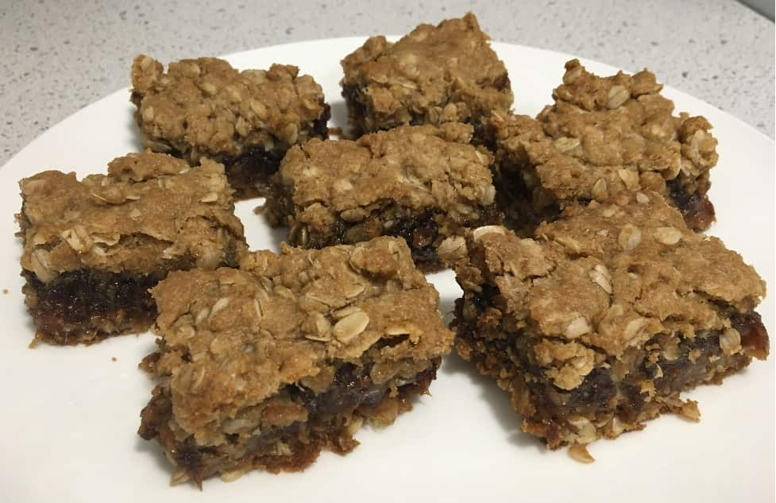

This recipe is one of my more original recipes - it is both vegan and gluten-free!
Ingredients:
\(2\frac{1}{4}\) cups rolled oats
\(2\frac{1}{4}\) cups gluten-free flour
\(\frac{3}{8}\) tsp salt
2 cups brown sugar
\(1\frac{1}{8}\) tsp baking soda
\(1\frac{1}{2}\) cups plant butter
\(\frac{3}{8}\) cups apple sauce (one snack size cup)
\(1\frac{1}{8}\) lbs diced pitted dates
\(\frac{1}{2}\) tbsp lemon juice
Instructions:
Combine rolled oats, pastry flour, salt, \(1\frac{1}{2}\) cups brown sugar, and baking soda in a bowl.
Mix in \(1\frac{1}{2}\) cups plant butter, and \(\frac{3}{8}\) cups apple sauce (1 of the snack size cups).
Press half of the mixture into a 13X9 pan, and bake 15 minutes at 350F.
In a pot, combine \(1\frac{1}{8}\) lbs diced pitted dates, \(1\frac{1}{2}\) cups water, and \(\frac{1}{2}\) cup brown sugar.
Bring to boil, cook until thickened. Then add \(\frac{1}{2}\) tbsp lemon juice. Remove from heat, spread over base, and then pat remaining mixture on top (the patting on top is to me the most difficult part: do it delicately so as not to mix the top layer at all with the filling).
Bake 20-25 minutes (23 in my oven) at 350F until top is lightly toasted.
Cool before serving, and enjoy!